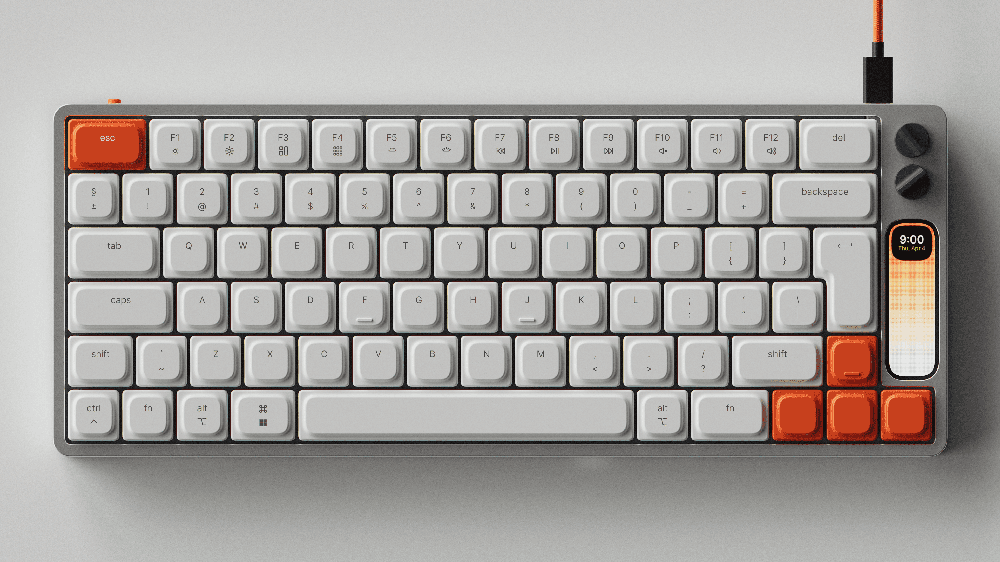

A $439 mechanical keyboard has a tiny vertical LCD where a knob used to be.
Let's write Python for it — and reverse-engineer everything we need along the way.
MICAH ALPERN · github.com/malpern/knob-to-eleven
The hardware
A keyboard. With a screen.
Work Louder k·no·b·1 — low-profile mechanical. Designed by Ben Fryc. Batch 2 shipping Q2 2026.
PRICE
$439 USD
SCREEN
100 × 310 px full-color LCD
KNOBS
2 × rotary encoders (one programmable)
BODY
CNC aluminum, silver + gunmetal
RUNTIME
MicroPython + LVGL (per firmware)
DEV SDK
not publicly documented yet

NO SIMULATOR.
No dev tools. No preview. No public SDK docs. Just a firmware image and a "UX playground" promise.
The thesis
So I built one.
eleven is a pixel-accurate simulator + hot-reload dev loop + RPC bridge for Work Louder devices.
Write app.py on your Mac, see it render instantly, deploy the same file to the device when the SDK lands.
Open source · MIT · ~2,100 lines of Python + Swift + a pinch of C.
ACT · 0
Before the code: research.
Three weeks of detective work before I wrote a single line of the simulator.
Clue #1 — the designer
Ben Fryc.
(Not Ben Fry of Processing. Different guy. Easy mistake.)
3D / motion designer, Michigan · full-time at Framer
Started the knob in Figma, July 2023 · partnered with Work Louder's WrkShop program
Past clients: Google, Figma, Loom, Wealthsimple
Signature aesthetic: modern-retro tactile-tech · soft shadows · matte plastics · one accent color
That accent color: #FF8800
Clue #2 — the intent
The 100×310 LCD is a UX playground. Down the road, we want people to be able to create their own features.
— Ben Fryc, knob.design
That sentence is the entire reason this project exists.
"We want people to create their own features" — so let's make that easy.
Clue #3 — the SDK shape
The firmware already tells us a lot.
Nomad E — Work Louder's other device — has developer-facing Python hooks in its firmware
The stack: MicroPython runtime + LVGL GUI + a wlsdk module (ui, time, rpc, sys)
The k·no·b·1 runs the same firmware family — different form factor, same runtime
The bet: same runtime ⇒ the same app.py will run on both
Catalogued the API surface. Built the simulator to match. Wait for official docs later.
Clue #4 — into the firmware
Then I opened it in Ghidra.
Docs tell you the shape of the API. The firmware tells you the truth.